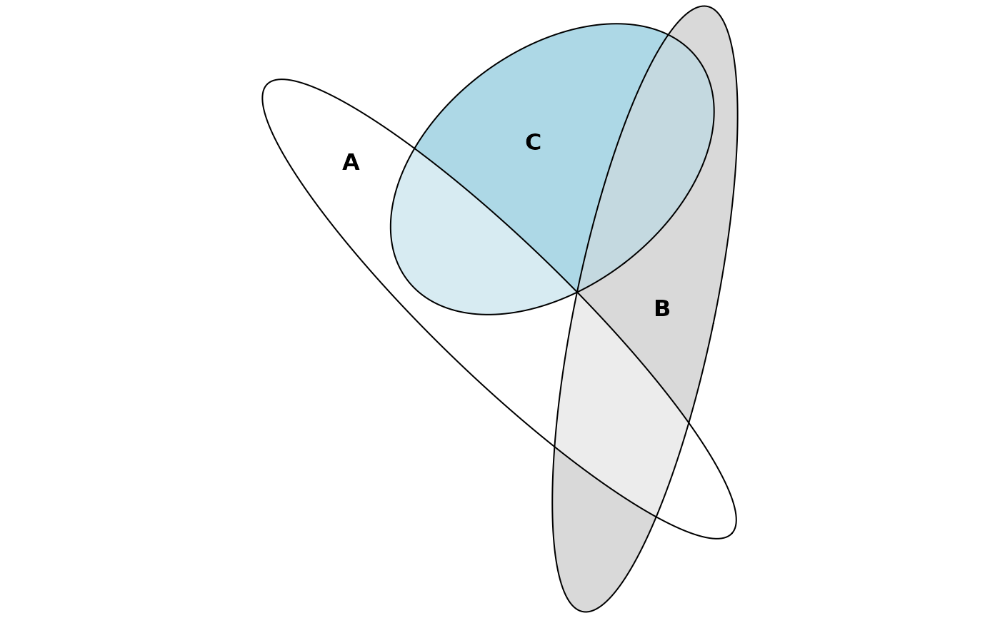

Fit Euler diagrams (a generalization of Venn diagrams) using numerical optimization to find exact or approximate solutions to a specification of set relationships. The shape of the diagram may be a circle or an ellipse.
euler(combinations, ...) # S3 method for default euler( combinations, input = c("disjoint", "union"), shape = c("circle", "ellipse"), control = list(), ... ) # S3 method for data.frame euler( combinations, weights = NULL, by = NULL, sep = "_", factor_names = TRUE, ... ) # S3 method for matrix euler(combinations, ...) # S3 method for table euler(combinations, ...) # S3 method for list euler(combinations, ...)
| combinations | set relationships as a named numeric vector, matrix, or data.frame (see methods (by class)) |
|---|---|
| ... | arguments passed down to other methods |
| input | type of input: disjoint identities
( |
| shape | geometric shape used in the diagram |
| control | a list of control parameters.
|
| weights | a numeric vector of weights of the same length as
the number of rows in |
| by | a factor or character matrix to be used in |
| sep | a character to use to separate the dummy-coded factors if there are factor or character vectors in 'combinations'. |
| factor_names | whether to include factor names when constructing dummy codes |
A list object of class 'euler' with the following parameters.
a matrix of h and k (x and y-coordinates for the
centers of the shapes), semiaxes a and b, and rotation angle phi
set relationships in the input
set relationships in the solution
residuals
the difference in percentage points between each disjoint subset in the input and the respective area in the output
the largest regionError
normalized residual sums of squares
If the input is a matrix or data frame and argument by is specified,
the function returns a list of euler diagrams.
The function minimizes the residual sums of squares, $$ \sum_{i=1}^n (A_i - \omega_i)^2, $$ where \(\omega_i\) the size of the ith disjoint subset, and \(A_i\) the corresponding area in the diagram, that is, the unique contribution to the total area from this overlap.
euler() also returns stress (from venneuler), as well as
diagError, and regionError from eulerAPE.
The stress statistic is computed as
$$ \frac{\sum_{i=1}^n (A_i - \beta\omega_i)^2}{\sum_{i=1}^n A_i^2}, $$ where $$ \beta = \sum_{i=1}^n A_i\omega_i / \sum_{i=1}^n \omega_i^2. $$
regionError is computed as
$$ \left| \frac{A_i}{\sum_{i=1}^n A_i} - \frac{\omega_i}{\sum_{i=1}^n \omega_i}\right|. $$
diagError is simply the maximum of regionError.
default: a named numeric vector, with
combinations separated by an ampersand, for instance A&B = 10.
Missing combinations are treated as being 0.
data.frame: a data.frame of logicals, binary integers, or
factors.
matrix: a matrix that can be converted to a data.frame of logicals
(as in the description above) via base::as.data.frame.matrix().
table: A table with max(dim(x)) < 3.
list: a list of vectors, each vector giving the contents of
that set (with no duplicates). Vectors in the list do not need to be named.
Wilkinson L. Exact and Approximate Area-Proportional Circular Venn and Euler Diagrams. IEEE Transactions on Visualization and Computer Graphics (Internet). 2012 Feb (cited 2016 Apr 9);18(2):321-31. Available from: http://doi.org/10.1109/TVCG.2011.56
Micallef L, Rodgers P. eulerAPE: Drawing Area-Proportional 3-Venn Diagrams Using Ellipses. PLOS ONE (Internet). 2014 Jul (cited 2016 Dec 10);9(7):e101717. Available from: http://dx.doi.org/10.1371/journal.pone.0101717
# Fit a diagram with circles combo <- c(A = 2, B = 2, C = 2, "A&B" = 1, "A&C" = 1, "B&C" = 1) fit1 <- euler(combo) # Investigate the fit fit1#> original fitted residuals regionError #> A 2 2.076 -0.076 0.021 #> B 2 2.076 -0.076 0.021 #> C 2 2.076 -0.076 0.021 #> A&B 1 0.605 0.395 0.040 #> A&C 1 0.605 0.395 0.040 #> B&C 1 0.605 0.395 0.040 #> A&B&C 0 0.494 -0.494 0.058 #> #> diagError: 0.058 #> stress: 0.049# Refit using ellipses instead fit2 <- euler(combo, shape = "ellipse") # Investigate the fit again (which is now exact) fit2#> original fitted residuals regionError #> A 2 2 0 0 #> B 2 2 0 0 #> C 2 2 0 0 #> A&B 1 1 0 0 #> A&C 1 1 0 0 #> B&C 1 1 0 0 #> A&B&C 0 0 0 0 #> #> diagError: 0 #> stress: 0# A set with no perfect solution euler(c("a" = 3491, "b" = 3409, "c" = 3503, "a&b" = 120, "a&c" = 114, "b&c" = 132, "a&b&c" = 50))#> original fitted residuals regionError #> a 3491 3491 0 0.001 #> b 3409 3409 0 0.001 #> c 3503 3503 0 0.002 #> a&b 120 120 0 0.000 #> a&c 114 114 0 0.000 #> b&c 132 132 0 0.000 #> a&b&c 50 0 50 0.005 #> #> diagError: 0.005 #> stress: 0# Using grouping via the 'by' argument through the data.frame method euler(fruits, by = list(sex, age))#> female.adult #> original fitted residuals regionError #> banana 1 0.937 0.063 0.009 #> apple 2 1.968 0.032 0.009 #> orange 2 1.974 0.026 0.009 #> banana&apple 4 4.028 -0.028 0.010 #> banana&orange 0 0.268 -0.268 0.024 #> apple&orange 0 0.260 -0.260 0.023 #> banana&apple&orange 2 1.961 0.039 0.010 #> #> diagError: 0.024 #> stress: 0.005 #> ------------------------------------------------------------ #> male.child #> original fitted residuals regionError #> banana 3 2.994 0.006 0.003 #> apple 1 0.982 0.018 0.002 #> orange 1 0.981 0.019 0.002 #> banana&apple 10 10.004 -0.004 0.007 #> banana&orange 0 0.137 -0.137 0.008 #> apple&orange 0 0.144 -0.144 0.008 #> banana&apple&orange 3 2.993 0.007 0.003 #> #> diagError: 0.008 #> stress: 0 #> ------------------------------------------------------------ #> male.adult #> original fitted residuals regionError #> banana 3 3.000 0.000 0.000 #> apple 2 2.003 -0.003 0.000 #> orange 0 0.016 -0.016 0.001 #> banana&apple 10 10.000 0.000 0.001 #> banana&orange 0 0.000 0.000 0.000 #> apple&orange 1 0.996 0.004 0.000 #> banana&apple&orange 1 1.002 -0.002 0.000 #> #> diagError: 0.001 #> stress: 0 #> ------------------------------------------------------------ #> female.child #> original fitted residuals regionError #> banana 4 4 0 0 #> apple 0 0 0 0 #> orange 1 1 0 0 #> banana&apple 4 4 0 0 #> banana&orange 1 1 0 0 #> apple&orange 0 0 0 0 #> banana&apple&orange 2 2 0 0 #> #> diagError: 0 #> stress: 0# Using the matrix method euler(organisms)#> original fitted residuals regionError #> animal 0 0.582 -0.582 0.086 #> mammal 0 0.302 -0.302 0.044 #> plant 0 0.210 -0.210 0.031 #> sea 0 0.430 -0.430 0.063 #> spiny 0 0.166 -0.166 0.025 #> animal&mammal 2 1.817 0.183 0.018 #> animal&plant 0 0.000 0.000 0.000 #> animal&sea 1 0.612 0.388 0.053 #> animal&spiny 0 0.215 -0.215 0.032 #> mammal&plant 0 0.000 0.000 0.000 #> mammal&sea 1 0.000 1.000 0.143 #> mammal&spiny 0 0.000 0.000 0.000 #> plant&sea 1 0.868 0.132 0.015 #> plant&spiny 1 0.000 1.000 0.143 #> sea&spiny 0 0.176 -0.176 0.026 #> animal&mammal&plant 0 0.000 0.000 0.000 #> animal&mammal&sea 0 0.268 -0.268 0.040 #> animal&mammal&spiny 0 0.061 -0.061 0.009 #> animal&plant&sea 0 0.119 -0.119 0.018 #> animal&plant&spiny 0 0.000 0.000 0.000 #> animal&sea&spiny 1 0.715 0.285 0.037 #> mammal&plant&sea 0 0.000 0.000 0.000 #> mammal&plant&spiny 0 0.000 0.000 0.000 #> mammal&sea&spiny 0 0.000 0.000 0.000 #> plant&sea&spiny 0 0.016 -0.016 0.002 #> animal&mammal&plant&sea 0 0.000 0.000 0.000 #> animal&mammal&plant&spiny 0 0.000 0.000 0.000 #> animal&mammal&sea&spiny 0 0.177 -0.177 0.026 #> animal&plant&sea&spiny 0 0.043 -0.043 0.006 #> mammal&plant&sea&spiny 0 0.000 0.000 0.000 #> animal&mammal&plant&sea&spiny 0 0.000 0.000 0.000 #> #> diagError: 0.143 #> stress: 0.352#> original fitted residuals regionError #> animal 0 0.789 -0.789 0.019 #> mammal 0 0.360 -0.360 0.009 #> plant 0 0.099 -0.099 0.002 #> sea 0 0.409 -0.409 0.010 #> spiny 0 0.200 -0.200 0.005 #> animal&mammal 30 29.984 0.016 0.197 #> animal&plant 0 0.000 0.000 0.000 #> animal&sea 4 0.169 3.831 0.065 #> animal&spiny 0 0.027 -0.027 0.001 #> mammal&plant 0 0.000 0.000 0.000 #> mammal&sea 8 0.000 8.000 0.138 #> mammal&spiny 0 0.000 0.000 0.000 #> plant&sea 2 0.000 2.000 0.034 #> plant&spiny 9 9.000 0.000 0.059 #> sea&spiny 0 0.062 -0.062 0.001 #> animal&mammal&plant 0 0.000 0.000 0.000 #> animal&mammal&sea 0 0.431 -0.431 0.010 #> animal&mammal&spiny 0 0.100 -0.100 0.002 #> animal&plant&sea 0 0.000 0.000 0.000 #> animal&plant&spiny 0 0.176 -0.176 0.004 #> animal&sea&spiny 5 0.018 4.982 0.086 #> mammal&plant&sea 0 0.000 0.000 0.000 #> mammal&plant&spiny 0 0.000 0.000 0.000 #> mammal&sea&spiny 0 0.000 0.000 0.000 #> plant&sea&spiny 0 0.098 -0.098 0.002 #> animal&mammal&plant&sea 0 0.000 0.000 0.000 #> animal&mammal&plant&spiny 0 0.054 -0.054 0.001 #> animal&mammal&sea&spiny 0 0.000 0.000 0.000 #> animal&plant&sea&spiny 0 0.002 -0.002 0.000 #> mammal&plant&sea&spiny 0 0.000 0.000 0.000 #> animal&mammal&plant&sea&spiny 0 0.000 0.000 0.000 #> #> diagError: 0.197 #> stress: 0.1# The table method euler(pain, factor_names = FALSE)#> original fitted residuals regionError #> widespread 204 204.002 -0.002 0 #> regional 229 229.002 -0.002 0 #> male 48 48.032 -0.032 0 #> widespread®ional 0 0.000 0.000 0 #> widespread&male 78 77.984 0.016 0 #> regional&male 143 142.992 0.008 0 #> widespread®ional&male 0 0.247 -0.247 0 #> #> diagError: 0 #> stress: 0# A euler diagram from a list of sample spaces (the list method) euler(plants[c("erigenia", "solanum", "cynodon")])#> original fitted residuals regionError #> erigenia 0 0 0 0 #> solanum 16 16 0 0 #> cynodon 1 1 0 0 #> erigenia&solanum 2 2 0 0 #> erigenia&cynodon 0 0 0 0 #> solanum&cynodon 25 25 0 0 #> erigenia&solanum&cynodon 20 20 0 0 #> #> diagError: 0 #> stress: 0